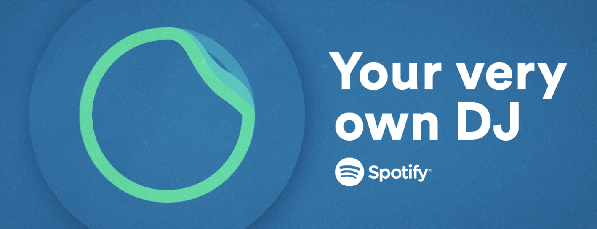

My experience with Spotify DJ
Determining Whether I Still Like Spotify DJ Or Not
Today I will being the Spotify DJ which uses AI to curate a selection of songs for the user. I don’t really use it often, but when used it chooses songs based on what I’ve been listening to or songs it thinks I would listen to. The AI speaks for a few seconds to introduce the songs it will play and why and then plays a few songs, and it does this over and over again. Typically my music style features genres from the Caribbean, such as DanceHall, Konpa, Raboday and then some Afrobeats and modern day Rap. As for my expectations for the Spotify AI, I have little faith in it curating a playlist that I would actually enjoy because when I used it a few years back it felt like it had no data on me at all and like it was ignoring music that just wasn’t primarily in English. So I am wondering how it will be different this time. I used the songs it gave me and put it in a playlist for anyone who is interested in any of the songs or wants to follow along with this blog
https://open.spotify.com/playlist/27vkJiB5NCRwMnaeh40zs7?si=2d3191410bfe4910&pt=a66b38edd3796ae626fba70f2c9786d4
I am aware Spotify DJ is still in its testing phase and isn’t supposed to be taken like it is perfect.

Round 1
Segment 1: In this round the DJ begins by talking about giving me music about an artist named DJ Crazy Jay. The songs from this segment are below
- On ti Gouyad - DJ CRAZY JAY
- Después De La 1 - Cris Mj, Floyy Menor, LOUKII
- Wine Slow - Gyptian
- M ANVI BOW - Bedjine and kdilak mesaje a
- Safe - Michaël Brun, Rutshell Guillaume, John Legend
Segment 2:The next segment composed of these songs:
- Shake Body - Skales
- Bedroom Bully - Busy Signal (This song made me very understimulated and I hated the beat)
- Bad - Blaiz Fayah, Tribal Kush
- Bicycle Ride - Vybz Kartel, Bunji Garlin (I really liked the rhythm of this song)
- Ameno Amapiano - Goya Menor, Nektunez (this one was certainly um, interesting… I didn’t know how I felt about this one. I think I both hate and love it somehow.)
- Mek it Bunx Up - DeeWunn, Marcy Chin
I hadn’t heard of much of these songs except for 1 and 6.
Segment 3: The next segment composed of these songs
- Naked - Ella Mai
- My Boo - USHER, Alicia Keys
- How do you sleep? - Sam Smith (I skipped this, I don’t think I can stand listening to this in present day)
- Leave The Door Open - Bruno Mars, Anderson.Paak, Silk Sonic
- Take it All - Kiana Ledé
I think this was supposed to be R & B/throwbacks it was recommending me, but I am confused on why How Do You Sleep fit in or was here.
I also questioned the reasons it determined it should play these…
Segment 4:The next segment
- Nobody Has To Know - Kranium, Ty Dolla $ign (I typically listen to the original version without Ty Dolla $ign and to be honest I think I do prefer that version)
- Afrodisiac - Brandy (sue me, but I’ve never listened to this song before, I thought it was really catchy lol)
- Pense à Moi - Gage (I get that this song was supposed to be chill, but it also understimulated me. I wasn’t a fan of the beat used, the song is in French but like I don’t like that the song sound like we in a Parisian coffee shop, and it’s 7 minutes long. Like why ?)
- Lower Body - Chris Brown, Davido (eh)
I feel like I was only really into one song in this entire segment, so I found this a miss
Round 2
Segment 1: I did another Dj session to see what kind of songs and what vibe it would give this time
- Pedi Kontwol - Oswald, Steves J Bryan
- Fem Voyé - Joé Dwèt Filé
- Trip in Motion - Drs (I found it really interesting that the DJ actually suggested a song that was just instrumental. Some people would see this as an “error”, but like as a Haitian, a lot of our songs are instrumentals. There be lyrics for like 2 minutes and the remaining 3-4 minutes be just instrumentals. Sometimes we regularly just listen to instrumentals like they’re just full songs. Since this isn’t the experience for many other people, I thought this was interesting that DJ actually did this.)
- Laptop - Kalash, Maureen
- Hit & Run - Shenseea, Masicka, Di Genius
I can see that here it was giving me suggestions that were Caribbean oriented mostly between Haiti and Jamaica. I was a lot more satisfied with these selections than the last segment.
Next Segment: Segment 2
- Peru - Fireboy DML, Ed Sheeran
- Call me by your name - Lil Nas X, (I kinda feel the same about this one like with How Do You Sleep, but I like this one better. I didn’t skip it this time)
- Ta Ta Ta - Bayanni, Jason Derulo (I think the song is nice but to be honest, I think only like hearing it on tiktok and not as an actual song on spotify)
- Del mar - Ozuna, Doja Cat, Sia (This actually has nothing to do with how well DJ is able to pick songs for me actually, but for the song itself, I kind of wish Doja Cat rapped in Spanish like Sia did, Doja’s part - while not bad, I feel sticks out to me like a sore thumb which I do not like)
- Ku Lo sa - Oxlade, Camila Cabello (completely skipped tbh, I feel like this song was too overplayed for me in the past)
I realize for this segment it was also giving kinda more throwback songs to a few years ago. I kind of like this section because its features collabs between artist from different fields, like Afrobeats and pop with Fireboy DML & Ed Sheeran or Reggaeton and Pop like with Ozuna and Sia
Next Section: Segment 3
- Zimbabwe - Bob Marley & The Wailers
- More Love - Eric Donaldson
- I shot the Sheriff - The Wailers
- My only Lover - Gregory Isaacs
I know for this portion it played me reggae songs, which I found mad interesting because I felt it had very different vibe than what I had previously listened to. Reggae is not really a genre I really listen to often or would choose to put it on myself like that, I think I’ve listened to it like twice on spotify
Segment 4: Spotify DJ described this as a Grind vibe that it was giving me?:
- Gang Gang - Polo G, Lil Wayne
- Straightenin - Migos
- Run it Up - Lil Tjay, Offset, Moneybagg yo
- Down Below - Roddy Ricch
- Vibez - Dababy (skipped for the same reason as How Do You Sleep)
These songs are songs I would listen to like back in the day, I haven’t listened to these in a while. But not much comment here
I feel like this session started off strong but ended pretty weak, and it wasn’t really fitting to the current vibe.
Round 3
This is my last session using Spotify’s DJ
Segment 1
- Komasava - Diamond Platnumz, Khalil Harrison, Chley
- Let’s groove - Earth, Wind & Fire (I genuinely don’t understand how this is here, like how does fit in with anything here? Where did this even come from? I’ve never even listened to this song on Spotify)
- Big Flexa - Costa Titch, Sdida, Alfa Kat, Man T…
- Bumbum Granada - MC’s Zaac, Jerry Smith
- Dalie - Kamo Mphela, Tyler ICU, Khalil Harrison…
I actually think here, that AI does a good job of recognizing the music types I like though and from cultures I listen to and suggesting to me a culture’s music I would particularly be interested in. It is not uncommon for me to listen to Afrobeats or music from other regions in Africa, so I think it does a good job of suggesting songs from Southern Africa like the ones here despite me not having really listened to much before. In the previous segments I think it tried to do the same with the Reggae because it seen I tend to like music from Caribbean cultures, but I don’t know I wasn’t too into it at the time, which I kind of consider a miss.
I’m not really sure of DJ’s algorithm to determine patterns or properties from songs I listen to, but I also tend to listen to songs with harder beats and those with softer beats tend to understimulate me and not capture much of my attention, which I found impressive when it suggested to me the fourth song, which is in Portuguese and not from South Africa but it is similar to other songs in terms of how hard the beats hit, which I consider this segment to be a hit.
The reason the AI gave for playing these songs was that it was March and women’s history month.
Segment 2
- take your vibes and go - Kito, Kah-lo, brazy, Baauer
- Melodrama - Angelina Mango
- Passe ton chemin - Lynda
- Best Lover - 88rising, BIBI
All of these songs are songs I’ve never heard of actually, but I actually like them and think they’re really catchy with the exception of the last one.
Segment 3: DJ chose these songs for me because they’re “Catchy”
- GIRLS - KYLE, Rico Nasty (I feel the same about this one as the How Do You Sleep one)
- I’m in control - AlunaGeorge, Popcaan
- Baba - Aminé
I feel the same about this round, I feel it started off pretty strong but I was not really that invested in the end.
Overall
I feel like overall I found it to be the case that I would actually be really invested in the beginning and maybe the middle of each DJ session but after like 3 or 4 segments in it kind of goes downhill for me, which to be honest is better than the past, where I used to be completely uninvested in anything it suggested before. Perhaps it is getting trained better to recognize properties of music liked/listened to by the user. I think I can agree with this because I feel like when I tried this back when it was newer in like maybe 2022ish, it never really suggested to me music that was in a different language other than Spanish and English, but now in 2025 I find that now it actually suggests to me other languages such as French here or Haitian Creole. However there is still work that needs to be done, as Spotify still see Haitian genres as the same as another genre called Zouk, which is largely a human error as those behind this AI are ignorant in knowing the difference probably.
Although I had some new songs I didn’t really click with, I found that I actually had a decent experience listening to new songs it suggested me and I think I will definitely listen to them in the future for real.
I was not disappointed by my experience. I did find myself to be skipping songs or disappointed by the song that was playing but I also find that to be the case when it comes to humans. I be skipping songs left and right until I find one that fits the right vibe or mood so considering that humans are also like this as well, I think DJ did a good job. I think also it captures the experience of trying to find new songs accurately too. Sometimes when you trying to venture out to new music it is hard and there are often hits or misses, there is not going to be a hit everytime and this was the case with DJ today.